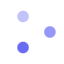

Free · Open Source · MIT
Turn your browser tab into a live status indicator.
A tiny, dependency-free library that turns the favicon and tab title into a real-time status channel — so users don't have to keep checking back on a tab to see if a task finished.
This is your actual browser favicon, live.
The problem
Your users shouldn't have to keep checking.
Modern apps do a lot of work that doesn't finish instantly. Once someone switches tabs, all of that becomes invisible until they come back to check — a small but constant tax on attention.
AI generation
Thinking, streaming, done — let the tab carry the status while the chat window is out of view.
Uploads & exports
Show real progress on the tab itself, so switching away doesn't mean losing track of where it's at.
Notifications
A new message or mention updates the tab immediately — no polling, no missed pings.
How real apps would use this
Every card below is live — and running on its own state.
Not mockups: each little tab icon is rendered right now, in your
browser, from the exact same spinner() / iconBadge()
building blocks any app can favicon.define() for
themselves — cycling through what that product's own real waiting
moment looks like.
See it for real
Start the task. Leave the tab.
This isn't a video — it drives the real favicon of the tab you're on right now.
- 1. Click Start task below.
- 2. Switch to another tab or window right away.
- 3. Watch this tab's favicon, not this page.
14 built-in states
Beautiful by default.
Every icon below is a real render straight from the library — 64×64, drawn on canvas, zero images shipped.

thinkingThe API
One line to start. One to wrap a promise.
import favicon from "@live-favicon/core";
favicon.thinking();
await generateAI();
favicon.success();// the flagship API — handles the
// whole lifecycle automatically
await favicon.task(generateAI(), {
start: "thinking",
success: "success",
error: "error",
});Get started
Works everywhere JavaScript does.
Zero runtime dependencies, ~3KB gzipped. Plain JS, React, or anywhere the DOM exists.
Vanilla / no build step
<script src="https://unpkg.com/@live-favicon/core"></script>
<script>
const favicon = LiveFavicon.default;
favicon.thinking();
</script>React
import { useFaviconState } from "@live-favicon/react";
useFaviconState(status === "done" ? "success" : "thinking");Full guides: Getting started · Core API · React API · Source on GitHub
Support the project
Free, and staying that way.
The core library is 100% free and MIT licensed — use it commercially, modify it, fork it. If it saves you time, consider supporting development.
Contact
Questions, bugs, or ideas?
For bugs and feature requests, a GitHub issue gets the fastest response and helps other users searching for the same thing. For anything else: